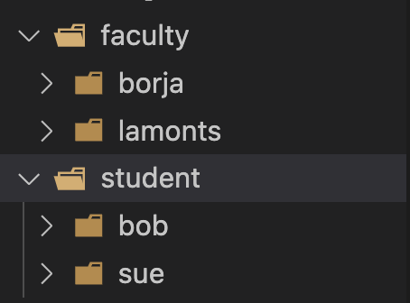

Homework #1¶
Due: Friday, October 10th at 11:59pm
This homework is intended to server as an introduction to bash shell scripting, basic Unix commands, and using filtering (i.e., text processing) commands to process text. This assignment is not meant to cover everything in the bash scripting language or to use a large number of built-in utility commands. It solely serves as a way for you to get familiar with working with the shell, Bash syntax, and basic utility commands.
Getting started¶
The following two sections explain the process of setting up your homework workspace for the course and how to retrieve your private Github repository.
MPCS Unix Bootcamp¶
The MPCS Unix Bootcamp is a prerequisite for this course. Before beginning this assignment, make sure to review Modules 0-7.
You can find the Unix Bootcamp materials on our Canvas page under Files → Unix Bootcamp Materials.
You may skip any modules after 7, since we will cover those topics later in this class.
CS Linux Machine¶
You will need access to an Linux based machine when working on your homework assignments. You should not test your programs on macOS or Windows Linux because these operating systems do not provide all utility commands necessary for completing this and possibly future assignments. Additionally, if they do provide a command then it may not contain all options that a Unix-like system provides.
We will use and grade all assignments on the CS Linux machines and all programming assignments must work correctly on these machines in order to receive credit.
However, you can work locally on a Unix or Unix-like machine but ensure that you test your final solutions on a CS Linux machine.
Please follow the instructions provided here
Creating Your Private Repository¶
For each assignment, a Git repository will be created for you on GitHub. However, before that repository can be created for you, you need to have a GitHub account. If you do not yet have one, you can get an account here: https://github.com/join.
To actually get your private repository, you will need this invitation URL:
HW1 invitation (Please check the Post “HW 1 is ready” Ed)
When you click on an invitation URL, you will have to complete the following steps:
You will need to select your CNetID from a list. This will allow us to know what student is associated with each GitHub account. This step is only done for the very first invitation you accept.
Note
If you are on the waiting list for this course you will not have a repository made for you until you are admitted into the course. I will post the starter code on Ed so you can work on the assignment until you are admitted into the course.
You must click “Accept this assignment” or your repository will not actually be created.
After accepting the assignment, Github will take a few minutes to create your repository. You should receive an email from Github when your repository is ready. Normally, it’s ready within seconds and you can just refresh the page.
- You now need to clone your repository (i.e., download it to your machine).
Make sure you’ve set up SSH access on your GitHub account.
For each repository, you will need to get the SSH URL of the repository. To get this URL, log into GitHub and navigate to your project repository (take into account that you will have a different repository per project). Then, click on the green “Code” button, and make sure the “SSH” tab is selected. Your repository URL should look something like this: git@github.com:mpcs51082-aut25/hw1-GITHUB-USERNAME.git.
If you do not know how to use
git cloneto clone your repository then follow this guide that Github provides: Cloning a Repository
If you run into any issues, or need us to make any manual adjustments to your registration, please let us know via Ed Discussion.
IMPORTANT: Eligible Commands & Bash¶
For this homework assignment, you are only allowed to use the following commands with or without using their options in your scripts.
Commands used in the Week 1, module 1 slides (i.e.,
m1_week1.pdf)Commands presented in the Unix Bootcamp Modules 0-7 only
tr
exit
Using any other command not specified in this list will result in a major penalty for that specific problem. I know there might be some better commands out there such as ``awk``, and ``sed`` but we will first learn the basics and then use more advanced commands as we move along in the course. You are free to use the entirety of the bash scripting language but are restricted to using only the above commands within your script files.
If you have any questions about using a command ask on Ed before you use it! You must code all problems in the Bash scripting language. No other programming language or scripting language is allowed.
Warm-Up¶
Warm-up exercises are not graded and are meant to give you hints towards solving the actual homework problems. All solutions to warm-up problems that require coding are already in your repositories. Do not just look at the solution! Try to solve the problem before looking at the solution. Please look in the hw1/warmup_solns directory to find these solutions.
Warm-Up #0¶
Before beginning the actual warm-up and homework problems, make sure you watch the prerecorded videos for module 1 and experiment with the devhints cheat sheet code-snippets while logged into a CS Linux machine.
Warm-Up #1¶
In a file named warmup1.sh, write a bash script that takes in a file as a command line argument. This file will only contain positive integers.
The script must find the maximum integer in the file. You can use the hw1/warmup/numbers.txt to test your script.
You can assume the file will only contain positive integers. The script should be ran as bash warmup1.sh FILE where FILE is the name of a file that contains only positive numbers.
For example
bash warmup1.sh numbers.txt
If the user forget to supply the file argument then print the error message "Error: no numbers file entered" and exit from the script immediately by running the command
exit 1.
Warm-Up #2¶
In a file named warmup2.sh, write a bash script that reads in a series of command line arguments that represent individuals associated with Uchicago.
Each command line argument has the following format: CNET:POSITION, where CNET is a Uchicago CNET identifier and POSITION is the position of the individual at the university. For example,
lamonts:faculty
borja:faculty
bob:student
For example, running the script as such
bash warmup2.sh lamonts:faculty bob:student borja:faculty sue:student
creates the directory shown in the image below
Aside 1: Sorting with sort -k..,..n¶
The sort command can sort text files by fields (columns) using -k. For CSV-like data, pair it with -t’,’ to tell sort that fields are comma-separated.
Key syntax¶
Field delimiter:
-t','sets the column separator to a comma.- Sort key:
-kSTART,ENDselects the field range to sort by. Most common:
-k2,2→ sort by only column 2.Add
nto sort numerically (otherwise it’s lexical):-k2,2n.
- Sort key:
Multiple keys: provide more than one
-kin priority order. Example:-k2,2n -k3,3n -k5,5nsorts by col2, then col3, then col5.
Cheat sheet¶
One numeric key:
sort -t',' -k2,2nTwo keys:
sort -t',' -k2,2n -k3,3nThree keys:
sort -t',' -k2,2n -k3,3n -k5,5nReverse on a key: add
rto that key (e.g.,-k2,2nr)
Aside 2: CSV Parsing with IFS and while loop¶
You can use the IFS (Internal Field Separator) variable in Bash to
split fields from a CSV file. For example, suppose we have a file
data.csv with the following content:
Alice,24,Engineer
Bob,30,Designer
Carol,27,Manager
We can parse it line by line using a while loop:
# Read each line from data.csv
while IFS=, read -r name age role; do
echo "Name: $name, Age: $age, Role: $role"
done < data.csv
Explanation:
IFS=,tells Bash to split each line by commas.read -r name age roleassigns each field to a variable.done < data.csvfeeds the CSV file into the loop.
When run, the script prints:
Name: Alice, Age: 24, Role: Engineer
Name: Bob, Age: 30, Role: Designer
Name: Carol, Age: 27, Role: Manager
Homework Dataset¶
For all problems in this homework, you will use the street-cleaning dataset introduced in this week’s pre-recorded video:
1.5 – Demo: Shell-Scripting & Street Cleaning
The original dataset (orig_sched.csv) is in the data/ directory of your repository.
We’ve also included several modified versions of the dataset in data/ to help you test your bash scripts. You may assume the following about any street-cleaning file provided to your scripts:
The file is always a modification of the original dataset supplied in
data/orig_sched.csv.The file always includes the header row, and the header is identical to the original (same columns, same order, same names).
The records themselves may change (rows may be added/removed and/or modified), but the schema does not.
Note
You should not need to handle arbitrary CSV layouts or missing headers. Focus your solutions on the exact column structure of the original file.
Feel free to add additional modified datasets of the original dataset to help test your scripts.
Problem 1 - Count Unique Wards¶
Inside p1/p1.sh, write a Bash script that takes a street-cleaning CSV file as an argument and prints the total number of unique wards in the file. The script must accept exactly one argument: the path to the CSV (e.g., data/orig_sched.csv). If no file or too many files are provided, the script must exit with status 1 and print:
Usage: p1.sh SCHEDULE_FILE
Output should be a single integer: the number of distinct wards present in the file.
Examples¶
Successful run:
$ bash p1.sh ../data/orig_sched.csv
50
No argument provided:
$ bash p1.sh
Usage: p1.sh SCHEDULE_FILE
$ echo $?
1
Problem 2 - Are Two Street-Cleaning Files Different?¶
Inside p2/p2.sh, write a Bash script that takes two street-cleaning CSV files and reports whether they are different.
You mus diff -q command to compare the two files. The -q for diff in short says tell me if they differ, but don’t show the differences. If the files are identical, diff -q prints nothing (just returns exit code 0).
Output
Print ``YES`` if the files are different (
diff -qexits with status 1).Print ``NO`` if the files are identical (
diff -qexits with status 0).Do not include
set -o errexitin this script file.
The script must accept exactly two arguments: the paths to the CSV files. If both files are not specified, the script must exit with status 1 and print:
Usage: p2.sh SCHEDULE_FILE1 SCHEDULE_FILE2
The only output for valid comparisons should be either YES or NO (do not print any additional text).
Examples¶
Identical files:
$ bash p2.sh ../data/orig_sched.csv ../data/orig_sched.csv
NO
Different files:
$ bash p2.sh ../data/orig_sched.csv ../data/sched_003.csv
YES
Missing arguments:
$ bash p2.sh ../data/orig_sched.csv
Usage: p2.sh SCHEDULE_FILE1 SCHEDULE_FILE2
$ echo $?
1
Problem 3 - Sections per Ward¶
Inside p3/p3.sh, write a Bash script that takes a street-cleaning CSV file and prints, for each ward, the total number of unique sections in that ward. The script must accept exactly one argument: the path to the CSV (e.g., data/orig_sched_modified.csv). If no file is provided, the script must exit with status 1 and print:
Usage: p3.sh SCHEDULE_FILE
Output format: one ward per line as: WARD COUNT sorted in ascending order by ward number.
Examples¶
$ bash p3.sh ../data/orig_sched.csv
1 11
2 7
3 13
4 15
5 17
6 18
7 17
8 23
9 20
10 17
11 12
12 11
13 27
14 18
15 10
16 25
17 25
18 20
19 25
20 19
21 24
22 14
23 23
24 11
25 10
26 12
27 18
28 14
29 14
30 15
31 11
32 20
33 13
34 6
35 12
36 13
37 15
38 26
39 23
40 19
41 32
42 5
43 8
44 11
45 25
46 9
47 20
48 11
49 13
50 14
Missing arguments:
$ bash p3.sh
Usage: p3.sh SCHEDULE_FILE
$ echo $?
1
Problem 4 - Ward/Section Directory Pack¶
Inside p4/p4.sh, write a Bash script that, given a street-cleaning CSV, a ward, and a section, creates a top-level directory named from the ward/section (with leading zeros) and a month-by-month subfolder layout. Each month folder must contain a single file dates.txt holding the DATES string for that month.
Usage¶
Usage: p4.sh [-z] SWEEP_FILE WARD SECTION
SCHEDULE_FILE: path to the CSV (e.g.,data/orig_sched.csv)WARD: ward number (integer)SECTION: section number (integer)-z(optional): after creating the directory structure, zip it using the top-level nameIf arguments are missing, print:
Usage: p4.sh [-z] SCHEDULE_FILE WARD SECTIONand exit 1.
You can assume the ward/section provided as command line arguments do exist in the given file CSV.
Naming & Structure Requirements¶
Top-level directory name: use two-digit, zero-padded ward and section with a clear prefix that starts with a
Wfor the ward andSfor the section, e.g.:Ward 1, Section 3 →
W01_S03Ward 12, Section 9 →
W12_S09
Month directories: create a subdirectory for each month that appears in the CSV for that ward/section. The directory name must be the numeric month value with no leading zeros.
dates.txt: inside each month directory, write one file named
dates.txtwhose content is the exact DATES string from the CSV for that ward/section/month (e.g.,4,5). - If multiple rows exist for the same month, you may write the first matching row’s DATES string.If
-zis provided, create an archive namedWXX_SYY.zipcontaining the whole tree.Do not create a top-level directory if the ward and section given has no records in the given file. Additionally if a top-level directory is not created and the
-zis provided then do not make a zip file.
Examples¶
Input:
$ p4.sh ../data/orig_sched.csv 1 1
Creates:
W01_S03/
├── 4/
│ └── dates.txt # The file contains only the string: "4,5" (notice the double quotes must remain)
├── 5/
│ └── dates.txt # The file contains only the string: "29,30" (notice the double quotes must remain)
├── 6/
│ └── dates.txt
└── 8/
│ └── dates.txt
└── 9/
│ └── dates.txt
└── 10/
│ └── dates.txt
└── 11/
└── dates.txt
With zip:
$ p4.sh -z ../data/orig_sched.csv 1 3
# Produces W01_S03/ ... and W01_S03.zip
Hint¶
When using the cut command with the -f option, you can select specific fields (columns) from a delimited file.
If you want to select all remaining columns starting from a specific field, you can use a dash (-) after the field number.
For example:
cut -f3- data.txt
This command selects the third field and all fields after it from each line of data.txt.
Problem 5 - Print the Days¶
Inside p5/p5.sh, write a Bash script that, given a street-cleaning CSV file, a ward, a section, and a month, prints the days for that street cleaning for that month within the given ward and section.
Usage¶
p5.sh SCHEDULE_FILE WARD SECTION MONTH
SCHEDULE_FILE: path to the CSV (e.g.,data/orig_sched.csv)WARD: ward number (integer)SECTION: section number (integer)MONTH: month number (integer; e.g., 4 for April … 11 for November)
Requirements¶
If any argument is missing, print the exact usage string below and exit 1:
Usage: p5.sh SCHEDULE_FILE WARD SECTION MONTHOutput: The days (each on its separate line) for street cleaning within the given month for the specified ward and section. Do not print anything if no days are found for that month within the given ward and section.
Examples¶
Days found:
$ p5.sh data/orig_sched.csv 1 1 4
4
5
No days found:
$ p5.sh data/orig_sched.csv 1 1 2
$
Missing arguments:
$ p5.sh data/orig_sched.csv 1 1
Usage: p5.sh SCHEDULE_FILE WARD SECTION MONTH
$ echo $?
1
Hint¶
The tr command reads from standard input and translates, squeezes, or deletes characters, writing the result to standard output.
Translate lowercase → uppercase:
echo "hello, world" | tr 'a-z' 'A-Z'
# HELLO, WORLD
Replace spaces with newlines (split into one-per-line):
echo "alpha beta gamma" | tr ' ' '\n'
# alpha
# beta
# gamma
Squeeze repeated spaces to a single space (`-s`):
echo "a b c" | tr -s ' '
# a b c
-d: delete all occurrences of the specified characters instead of translating.Example: remove commas from a stream:
echo "1,2,3" | tr -d ',' # -> 123
Grading¶
Programming assignments will be graded according to a general rubric. Specifically, we will assign points for completeness, correctness, design, and style. (For more details on the categories, see our Assignment Rubric page.)
The exact weights for each category will vary from one assignment to another. For this assignment, the weights will be:
Completeness: 75%
Correctness: 15%
Style/Design: 10%
Submission¶
Before submitting, make sure you’ve added, committed, and pushed all your code to GitHub. You must submit your final work through Gradescope (linked from our Canvas site) in the “Homework #1” assignment page by linking your Github account to your Gradescope account and upload the correct repository based on the homework assignment. When you submit your homework, a pop window will appear. Click on “Github” and then “Connect to Github” to connect your Github account to Gradescope. Once you connect (you will only need to do this once), then you can select the repository you wish to upload and the branch (which should always be “main” or “master”) for this course.
Depending on the assignment, once you submit your work, an “autograder” will run. This autograder should produce the same test results as when you run the code yourself; if it doesn’t, please let us know so we can look into it. A few other notes:
You are allowed to make as many submissions as you want before the deadline.
Please make sure you have read and understood our Late Submission Policy.
Your completeness score is determined solely based on the automated tests, but we may adjust your score if you attempt to pass tests by rote (e.g., by writing code that hard-codes the expected output for each possible test input).
Gradescope will report the test score it obtains when running your code. If there is a discrepancy between the score you get when running our grader script, and the score reported by Gradescope, please let us know so we can take a look at it.